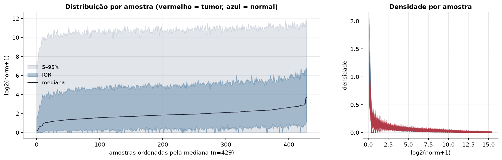
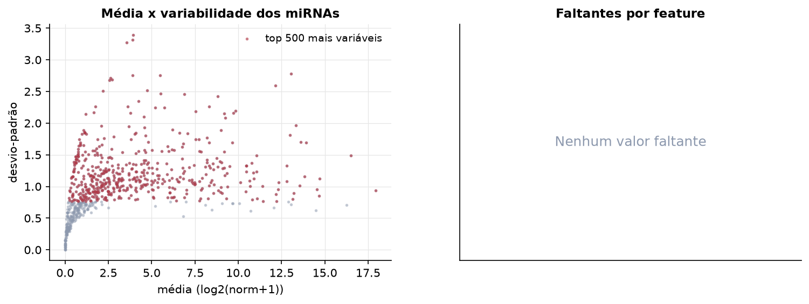
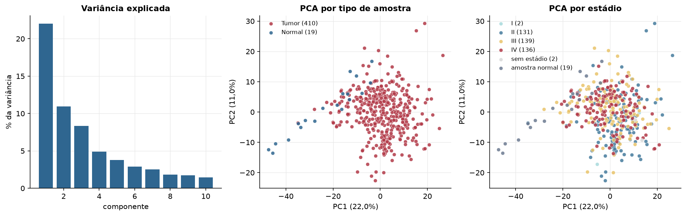
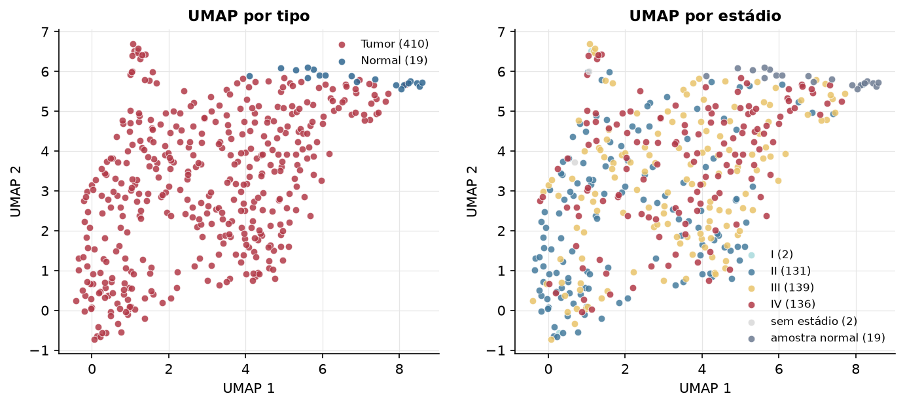
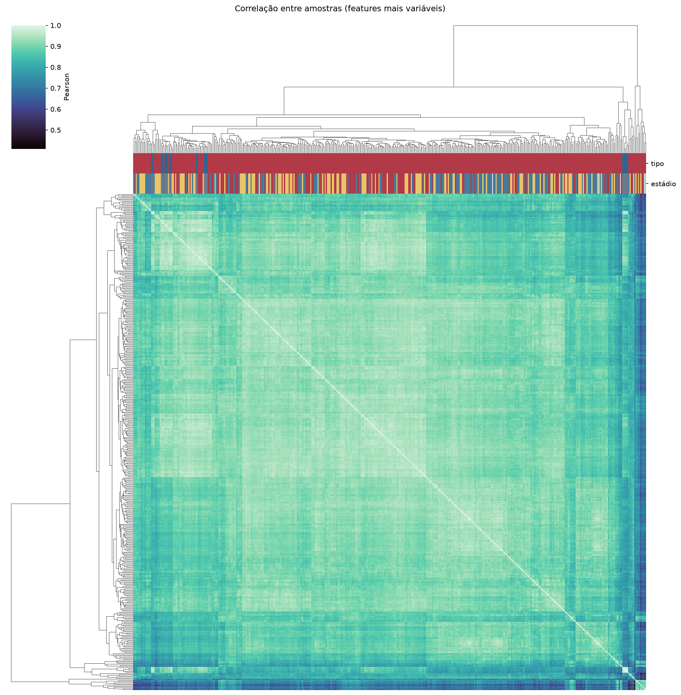
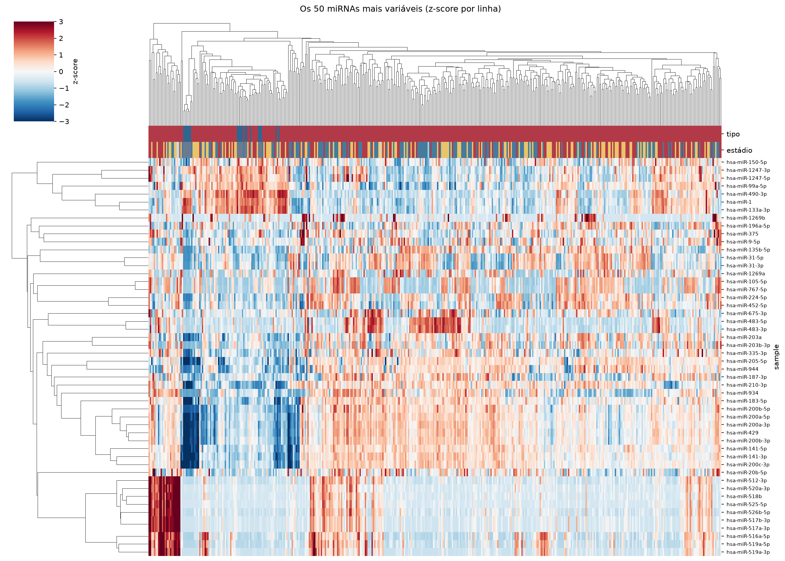
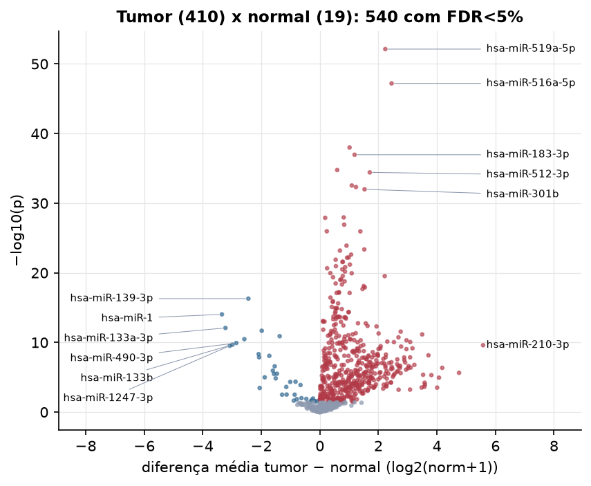
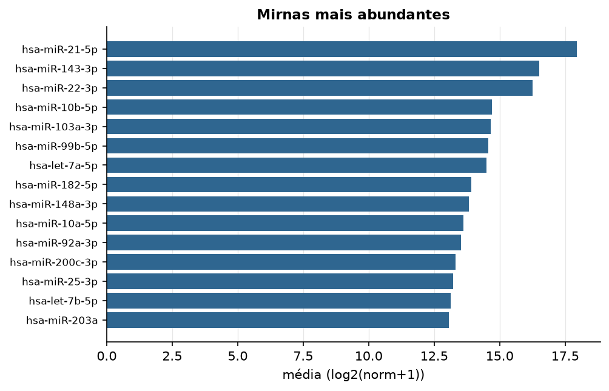

BLCA · miRNA-seq (PanCanAtlas)
miRNA maduro, normalizado e corrigido por lote (EB), log2(x+1) · gerado em 21/10/2026 18:29
743miRNAs
410amostras tumorais
19amostras normais
0,0%valores faltantes
Fonte: PanCanAtlas (pancanMiRs_EBadjOnProtocolPlatformWithoutRepsWithUnCorrectMiRs_08_04_16.xena)
Fita madura (5p/3p) já normalizada. As contagens brutas por precursor estão no relatório de contagens.
Principais resultados
- 743 miRNAs medidos em 429 amostras (410 tumorais e 19 normais); 0,0% dos valores estão faltando.
- Os dois primeiros componentes principais explicam 22,0% e 11,0% da variância das features mais variáveis.
- Correlação mediana entre amostras: 0,90.
- Amostras com correlação muito abaixo das demais (possíveis outliers técnicos): TCGA-BL-A0C8-01, TCGA-BT-A20R-11, TCGA-BT-A2LA-01, TCGA-H4-A2HO-01, TCGA-G2-A2EL-01, TCGA-HQ-A2OE-01, TCGA-GV-A3QG-01, TCGA-GD-A3OS-01, TCGA-GV-A3QF-01, TCGA-CU-A3QU-01.
- Tumor x normal: 540 miRNAs diferentes com FDR < 5% (505 maiores no tumor, 35 maiores no normal; 19 pacientes têm o par tumor-normal).
- Mais aumentados no tumor: hsa-miR-519a-5p, hsa-miR-516a-5p, hsa-miR-615-3p, hsa-miR-183-3p, hsa-miR-135b-3p, hsa-miR-512-3p, hsa-miR-522-3p, hsa-miR-519a-3p.
- Mais reduzidos no tumor: hsa-miR-139-3p, hsa-miR-1, hsa-miR-133a-3p, hsa-miR-145-3p, hsa-miR-195-5p, hsa-miR-143-3p, hsa-miR-490-3p, hsa-miR-133b.
- Associações clínicas com p < 0,05 nos componentes principais: PC1 com estádio (p=3.2e-05); PC2 com estádio (p=2.1e-05); PC3 com estádio (p=1.8e-05); PC2 com sexo (p=0.024); PC2 com idade (p=2.5e-05); PC3 com idade (p=0.014).
Distribuição dos valores


Estrutura das amostras




Tumor x normal

Features mais diferentes entre tumor e normal
| sample | diferenca_tumor_menos_normal | t | p | fdr |
|---|---|---|---|---|
| hsa-miR-519a-5p | 2.235 | 17.683 | 7.45e-53 | 5.51e-50 |
| hsa-miR-516a-5p | 2.451 | 17.111 | 6.34e-48 | 2.35e-45 |
| hsa-miR-615-3p | 1.015 | 15.921 | 1.02e-38 | 2.51e-36 |
| hsa-miR-183-3p | 1.187 | 22.145 | 1.11e-37 | 2.05e-35 |
| hsa-miR-135b-3p | 0.592 | 14.916 | 1.73e-35 | 2.56e-33 |
| hsa-miR-512-3p | 1.706 | 13.958 | 3.8e-35 | 4.69e-33 |
| hsa-miR-522-3p | 1.092 | 13.143 | 2.88e-33 | 3.04e-31 |
| hsa-miR-519a-3p | 1.234 | 13.073 | 4.81e-33 | 4.45e-31 |
| hsa-miR-301b | 1.527 | 20.094 | 1.02e-32 | 8.43e-31 |
| hsa-miR-3687 | 0.816 | 14.673 | 1.11e-28 | 8.23e-27 |
| hsa-miR-1537-5p | 0.182 | 11.998 | 1.27e-28 | 8.52e-27 |
| hsa-miR-1283 | 0.831 | 11.734 | 1.22e-27 | 7.54e-26 |
| hsa-miR-489-3p | 0.237 | 11.555 | 1.09e-26 | 5.96e-25 |
| hsa-miR-3065-5p | 1.384 | 17.152 | 1.13e-26 | 5.96e-25 |
| hsa-miR-520f-3p | 0.91 | 10.933 | 1.26e-24 | 6.21e-23 |
| hsa-miR-526b-5p | 1.518 | 11.838 | 4.39e-24 | 2.03e-22 |
| hsa-miR-3648 | 0.685 | 13.576 | 6.5e-24 | 2.83e-22 |
| hsa-miR-518b | 1.068 | 10.715 | 2.44e-23 | 1e-21 |
| hsa-miR-525-5p | 0.985 | 10.455 | 6.3e-23 | 2.45e-21 |
| hsa-miR-767-3p | 0.929 | 11.801 | 6.78e-23 | 2.51e-21 |
| hsa-miR-521 | 0.54 | 10.392 | 1.32e-22 | 4.65e-21 |
| hsa-miR-518a-5p | 0.782 | 10.286 | 2.55e-22 | 8.58e-21 |
| hsa-miR-527 | 0.776 | 10.274 | 2.84e-22 | 9.13e-21 |
| hsa-miR-520a-3p | 1.027 | 10.239 | 6.55e-22 | 2.02e-20 |
| hsa-miR-3136-5p | 0.549 | 12.703 | 1.11e-21 | 3.29e-20 |
| hsa-miR-518c-5p | 0.865 | 10.072 | 1.52e-21 | 4.33e-20 |
| hsa-miR-105-3p | 0.249 | 10.04 | 2.24e-21 | 6.13e-20 |
| hsa-miR-1323 | 0.767 | 9.989 | 3.15e-21 | 8.32e-20 |
| hsa-miR-520a-5p | 0.858 | 9.89 | 6.65e-21 | 1.7e-19 |
| hsa-miR-548y | 0.358 | 9.85 | 1.11e-20 | 2.75e-19 |
Associação com variáveis clínicas
p-valores da associação dos três primeiros componentes principais (só tumores) com estádio (Kruskal-Wallis), sexo (Mann-Whitney), idade (Spearman) e sobrevida global (Cox univariado).
| estádio (Kruskal) | sexo (Mann-Whitney) | idade (Spearman) | sobrevida OS (Cox) | |
|---|---|---|---|---|
| PC1 (18,1%) | 3.2e-05 | 0.237 | 0.472 | 0.135 |
| PC2 (11,2%) | 2.07e-05 | 0.024 | 2.52e-05 | 0.001 |
| PC3 (8,5%) | 1.79e-05 | 0.699 | 0.014 | 0.245 |
Mais abundantes
